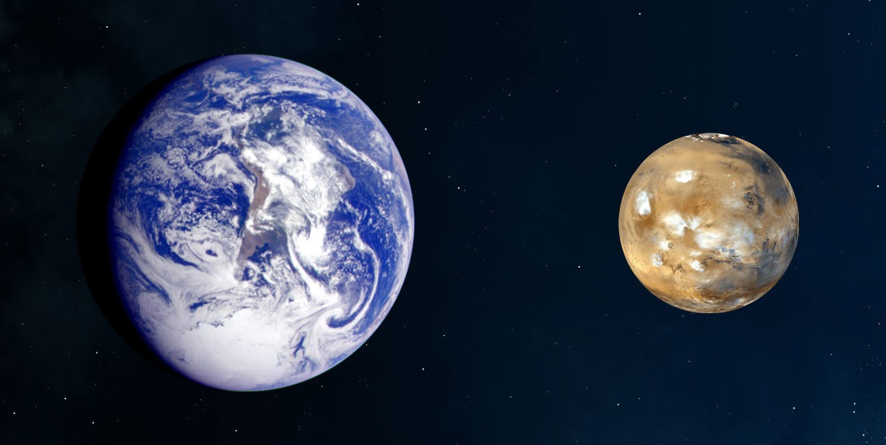
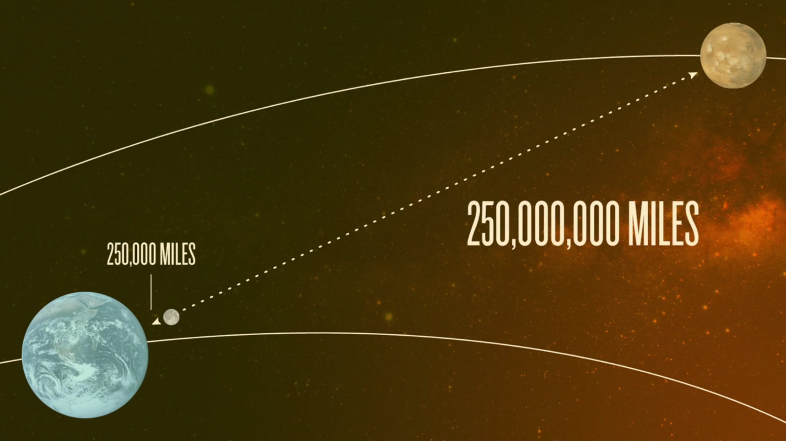
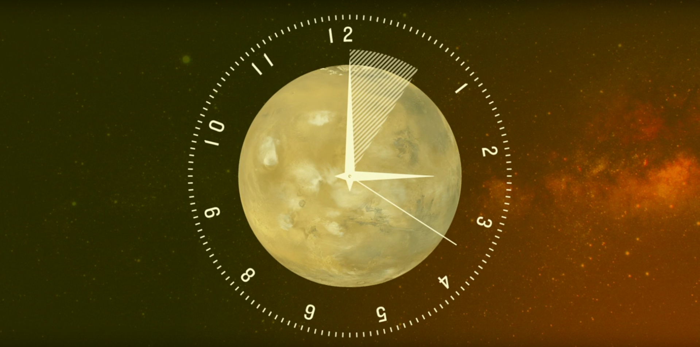
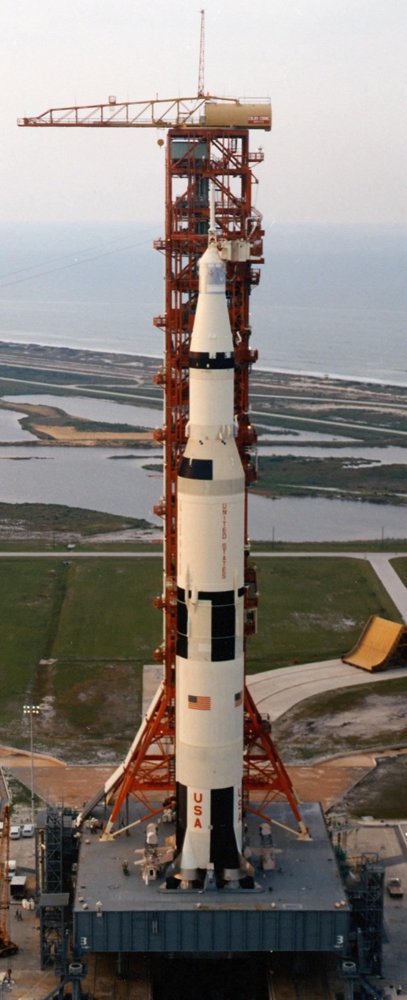

Mars - A Vörös bolygó
Föld-Mars Összehasonlítás:
 |
A Mars nem a testvér bolygónk! Bár a mérete majdnem fele akkora, mint a Földdé, a felszín területe, közel megegyezik a Föld szárazföldi területeivel, mivel a Föld felszínét többnyire víz borítja. Tömege miatt a gravitáció sokkal gyengébb, 38%-a, a földi gravitációnak! Bár a Mars nem tűnik élhetőnek, mégis az egész Naprendszerünkben ez a legélhetőbb bolygó, a Föld után. |
Fizikai Összehasonlítás:
A Mars légköre több mint 100x ritkább, mint a Földdé, az ember számára nem belélegezhető, mert 96%-a szén-dioxid. A felszínen dermesztő hideg van, az átlag hőmérséklet -63°C, bár széles skálán ingadozik. A Mars nagyon messze van, 1000x távolabb, mint a hold. A Hold 400000 km távol van tőlünk. |
 |
Időbeli eltérés:
 |
Egy nap a Marson hasonló, mint a földön, a különbség plusz 39 perc. Az évszakok és évek hossza kétszer olyan hosszúak, mint a Földön. |
Saturn V, Tervek:
Probléma: Az Apollo Űrhajósainak 3 napjukba tellett odaérniük a Holdra. A Mars 400 millió km-re van tőlünk, és 7-8 hónapunkba fog kerüli, (240 nap) hogy odaérjünk! Mindez csak akkor, ha egy bizonyos napra időzítjük a felszállást, egy meghatározott időben, ami két évente lehetséges, amikor a Föld és a Mars pont úgy helyezkednek el egymástól, hogy a rakéták a legrövidebb útvonalon érjenek célba. 240 nap hosszú idő összezárva egy konzervdobozba. Eddig összesen ~46 Kilövésen vagyunk túl a mars irányába, ugyanakkor csupán az 1/3-a ért célba. Nagyrészük megsemmisült, felrobbant, vagy lezuhant. A másik nagy probléma hogy jelenleg nincs is elég nagy rakétánk, ami el tudna vinni oda. Egyszer volt ilyen rakétánk, a Saturn V. Az egyik legkáprázatosabb gép volt, amit ember valaha épített. Ezzel jutottunk el a Holdra. Később politikai, pénzügyi okokból, úgy döntöttek a nagy cégek vezetőségei, hogy a Saturn V helyett megépítjük az Űrrepülőgépet, ami az újra felhasználhatósága miatt lett volna fontos, végül viszont a valaha ember által folytatott legdrágább projekt lett. Így jutottunk el odáig hogy jelenleg nincs alkalmas eszközünk, hogy eljussunk a Marsra. Mára lassan újra eljut odáig az emberiség hogy újra egy megfelelő méretű, felszereltségű rakétát építsen. (BFR) |
 |